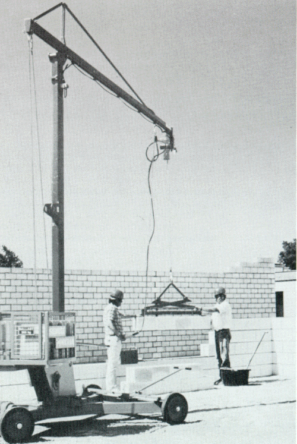
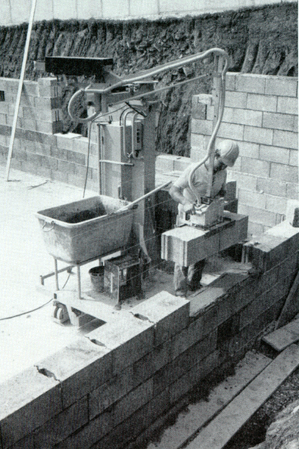

Für Mauersteine, die für das Vermauern von Hand zu schwer sind, müssen geeignete, dem Arbeitsverfahren angepaßte Versetzgeräte oder -maschinen verwendet werden. Diese sollen nach ergonomischen Gesichtspunkten gestaltet sein und möglichst vielseitig der jeweiligen Versetztechnik angepaßt werden können (siehe Bilder 10 und 11).

